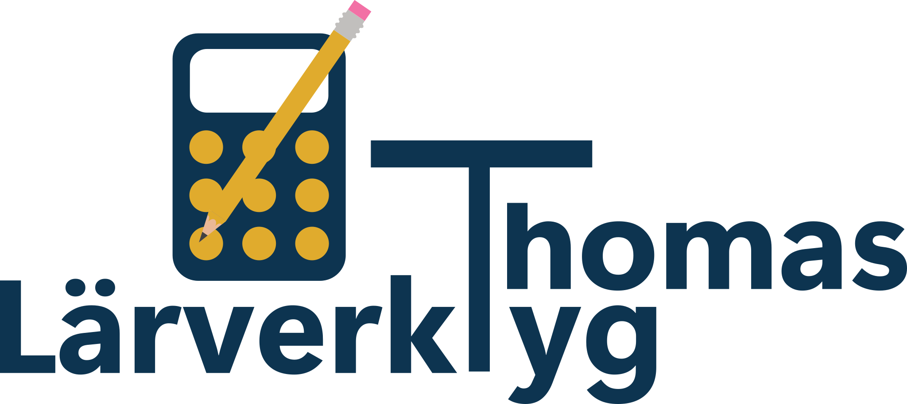

📈
Räta linjens ekvation
Upptäck och laborera med sambandet y = kx + m. Träna på hur k och m påverkar grafen.
Starta →
Digitala spel, aktiviteter och hjälpmedel för lärande och undervisning. Enkla att starta och gjorda för att fungera direkt i webbläsaren.
Upptäck och laborera med sambandet y = kx + m. Träna på hur k och m påverkar grafen.
Starta →Träna på höjning och sänkning. Bestäm förändringsfaktorn och använd den för att beräkna nya värden.
Starta →Träna på att avrunda tal från tusental till tusendel. Välj en eller flera nivåer och få stöd steg för steg när det behövs.
Starta →Träna multiplikation och division med 10, 100 och 1 000. Förstå hur siffrornas platsvärde förändras i positionssystemet.
Starta →Träna blandad form, bråkform och de fyra räknesätten med bråk. Välj samma eller olika nämnare vid addition och subtraktion.
Starta →Träna sambandet mellan bråk och decimaltal. Välj bråkfamiljer, träna åt båda hållen och koppla på procentform.
Starta →Träna multiplikation på ett enkelt och spelifierat sätt.
Starta →Träna negativa tal steg för steg med addition, subtraktion, multiplikation, division och potenser.
Starta →Träna prioriteringsregler med räknesätt, parenteser och potenser på valfri nivå.
Starta →Träna delbarhetsregler och få direkt återkoppling på dina svar.
Starta →Träna valfria multiplikationstabeller 1–10. Tävla mot tiden och försök slå din bästa svit med rätt svar i rad.
Starta →Simulera tärningskast och undersök sannolikhet och procentuell fördelning.
Starta →Flytta hela tornet med så få drag som möjligt. Välj 3–10 ringar och försök nå det teoretiska minimumet.
Starta →Ett strategispel för 2–3 spelare. Välj tal, dividera och försök få tre i rad samtidigt som ni utforskar hur täljare och nämnare påverkar kvoten.
Starta →Tävla i huvudräkning med slumpade uppgifter i sju områden och stigande svårighetsgrad.
Starta →Musikquiz med svenska sommarlåtar. Elevversion med frågor och möjlighet att visa eller dölja svar.
Starta elevversion →Genomför schackturneringar med automatisk lottning, resultat och tabell.
Starta →Använd fem slumpade tal och olika räknesätt för att komma så nära måltalet som möjligt.
Starta →Ett strategiskt matematikspel för elever och klassrum.
Starta →Träna på att säga klockan på tyska. Tre nivåer från hel- och halvtimmar till kvart och femminutersintervall.
Starta →Se aktuell matsedel för Ölyckeskolan. Menyn uppdateras automatiskt och är anpassad för utskrift på A4.
Visa matsedel →Skapa slumpmässiga grupper snabbt och enkelt.
Starta →Kasta valfritt antal tärningar med 4, 6, 8, 10, 12, 20 eller 100 sidor. Anpassat för helskärmsvisning.
Starta →Klistra in en gloslista och träna med flashcards eller stavningskontroll. Träna åt båda håll och repetera glosorna du missar.
Starta →Träna viktiga begrepp och förklaringar med flashcards, flervalsfrågor och olika övningslägen. Klistra enkelt in begreppslistor från exempelvis Google Kalkyl eller dokument.
Starta →Tydlig nedräkning för klassrummet. Ställ in tid eller sluttid och visa timern i helskärm.
Starta →Skapa en tydlig exit ticket för klassrummet. Klistra in text, lägg till en bild och visa resultatet snyggt i helskärm.
Starta →